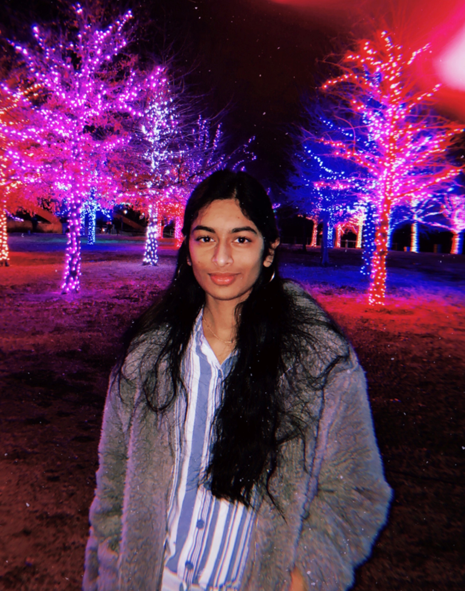

Many people around the world have passions for art, but may not have the experience or tools necessary to pursue this passion. Our goal is to walk artists, regardless of experience, through basic art concepts, like color theory, anatomy, harmony, and more, to help people in less privileged circumstances learn how to do what they love and express their creativity. Art is so important because it adds meaning to people’s lives and allows us to have a deeper understanding of their emotions.
Ava Vellozzi was first exposed to art through her local library, where at the age of 7 she took numerous art and pottery classes. Now, she lives in Naples, Florida and attends a high school where she pursues her passion for art and creativity through digital design and computer science classes. She even started her own Digital Design Club and is president of the Girls Who Code Club at her school. Through artology! she hopes to teach art to many students around the world and show that art and creativity can be expressed in many different ways.
Sindhu Samayamantula has loved art from when she was little. As she grew up, she made many art crafts and drawings with her family. She became more and more interested in art and tried to learn a new art skill whenever it was possible. She took an art class during each year of her middle school and high school. Currently, she is a rising sophomore majoring in Computer Science at the University of Texas at Dallas. Because she loves art, she tries to incorporate her design and art skills in her coding. artology! is one way she is trying to spread art awareness to the world and teach art to many other aspiring artists.
Zoe Chu has loved art for as long as she could remember, starting lessons with her parent's friend as young as age 6. Now, she lives in suburban central Florida, and attends a small high school where she continues to pursue her love for art and computer science. In addition, she owns a small business selling her artwork, and couldn't be happier with her artistic journey. Starting artology! with her two colleagues, she hopes to spread her love for art with many more all around the world.